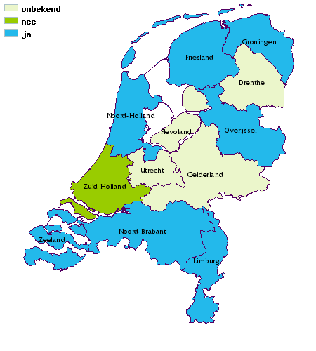

|
Terug naar de hoofdsite
|
2010
introductie
proces
people
planet
profit
totaalscores
uitleg
Korte introductie over het onderwerp
provincie
Een kaart van de gemiddelde prestatie per provincie
antwoorden
Per vraag een kaart van de antwoorden op dit thema
vragenlijst
Met deze vragenlijst kunt u de gegevens per provincie invoeren
profit > antwoorden > vraag
Uw provincie ondersteunt de ontwikkeling en promotie van (duurzaam geproduceerde) streekproducten.

Deze vraag heeft geen toelichting
EIGEN BEDRIJFSVOERING
1.
Uw provincie heeft meetbare klimaatdoelen gesteld voor energiebesparing en vermindering van CO2-uitstoot binnen haar eigen organisatie.
a.
Uw provincie heeft de ambitie vastgesteld om zelf als organisatie uiterlijk in 2015 klimaatneutraal te zijn.
b.
Uw provincie maakt gebruik van 100% groene stroom (verlichting provinciale wegen, in eigen gebouwen et cetera).
2.
Uw provincie heeft formeel vastgelegd dat duurzaamheid het uitgangspunt is van haar inkoopbeleid en heeft een stappenplan uitgewerkt om 100% duurzaamheid in 2015 te realiseren.
a.
Uw provincie heeft de Verklaring Duurzaam Inkopen van Agentschap NL (voorheen SenterNovem) ondertekend en voldoet aan de afspraken die hieraan verbonden zijn.
b.
Uw provincie past criteria voor duurzaam inkopen al toe in meer dan 50% van haar totale inkoopbudget (facilitaire diensten, aanbestedingstrajecten)
c.
Bestuurders en inkopers van uw provincie hebben kennis van duurzame inkoopprocessen en worden regelmatig bijgeschoold.
d.
Uw provincie is een voorlichtingstraject gestart richting haar belangrijkste (potentiele) leveranciers betreffende de eisen en kansen ten gevolge van het duurzaam inkoopbeleid.
e.
In uw provincie is een traject gestart voor het verduurzamen van de verlichting, de ICT en andere elektronische voorzieningen.
f.
100% van het papier dat uw provincie gebruikt, is afkomstig uit duurzame bronnen, dat wil zeggen: - Gerecycled papier en niet chloorgebleekt, of - Papier met het FSC-keurmerk of vergelijkbaar en niet chloorgebleekt.
g. Uw provincie schenkt standaard Fairtrade koffie en thee en zorgt ervoor dat er een breed assortiment duurzame producten wordt aangeboden in de eigen kantine en/of de catering en bij speciale bijeenkomsten. Gebruik van vlees wordt ontmoedigd.
3.
Uw provincie heeft een duurzaam mobiliteitsbeleid voor de eigen medewerkers.
a.
Uw provincie heeft concrete maatregelen getroffen om in het woon-werkverkeer van eigen medewerkers het gebruik van fiets, OV, carpoolen en dergelijke te stimuleren.
b.
Bij aanschaf van bedrijfsauto's is duurzaamheid voor uw provincie een belangrijk criterium en wordt uitgegaan van auto's met minimaal een A of B label.
c. Uw provincie compenseert de CO2-uitstoot van vliegreizen in diensttijd.
d.
Uw provincie heeft faciliteiten voor tele- en/of videoconferencing en stimuleert het gebruik hiervan.
4.
De provincie kiest er bewust voor dat in ieder geval een deel van haar financiele reserves op duurzame wijze worden beheerd.
5.
Uw provincie streeft er nadrukkelijk naar dat haar bestuur en personeelssamenstelling een evenredige afspiegeling is van de samenleving (diversiteitsbeleid).
a.
Uw provincie beschikt over een actueel diversiteitbeleid met expliciete prestatie-indicatoren wat betreft de samenstelling van haar eigen medewerkers.
b.
Binnen de provincie wordt minimaal 40% van de leidinggevende functies ingenomen door vrouwen. De Nederlandse regering heeft hiervoor streefcijfers vastgelegd in een Meerjarenbeleidsplan Emancipatie 2006-2010.
c.
In de huidige beleidsperiode is in het personeelsbestand van uw provincie een toenemend aantal 'nieuwe Nederlanders', mindervalide en/of re-integratiewerkers opgenomen.
DUURZAAM ONDERNEMEN / MVO
6.
Uw provincie heeft in het kader van haar klimaatbeleid een specifiek programma richting het bedrijfsleven om haar klimaatdoelstellingen te realiseren.
a.
Uw provincie heeft plannen (in de maak) om het geschatte potentieel aan duurzame energieproductie zoals vastgelegd in het klimaatakkoord in 2020 in nauwe samenwerking met private partijen te realiseren.
b. Uw provincie stimuleert energiebesparing bij bedrijven. Zij beschikt hiervoor over een divers pakket aan maatregelen, advies en subsidiemogelijkheden.
c.
Uw provincie controleert en handhaaft actief de afspraak dat bedrijven, waar zij het bevoegd gezag is voor vergunningverlening, alle energiebesparende maatregelen uitvoeren die zich binnen vijf jaar terugverdienen.
d. Uw provincie heeft in kaart gebracht welke bijdrage zij levert aan het realiseren van energieneutrale nieuwbouw in 2020 en de realisatie van de doelstellingen m.b.t. tot energiebesparing in de bestaande voorraad.
7.
Uw provincie heeft expliciet de ambitie neergelegd om samen met het bedrijfsleven de ecologische (ook wel mondiale) voetafdruk van haar economie te verkleinen en waar mogelijk duurzaam ketenbeheer te bevorderen.
a.
Het bevorderen van ketenverantwoordelijkheid en/of promoten van het concept cradle-to-cradle' staat expliciet in het coalitie programma. Het actief zoeken naar lokale grondstoffen maakt hiervan deel uit.
b.
De provincie heeft bindende afspraken met het bedrijfsleven wat betreft het terugdringen van afvalstromen.
c.
Bij het stimuleren en faciliteren van internationale handel wordt structureel aandacht geschonken aan het thema Maatschappelijk Verantwoord Ondernemen.
d.
Uw provincie ondersteunt de ontwikkeling en promotie van (duurzaam geproduceerde) streekproducten.
8.
Uw provincie heeft samen met het bedrijfsleven en kennisinstituten een innovatieagenda opgemaakt en middelen beschikbaar gesteld om de transitie naar een duurzame economie te bewerkstellingen.
a. Uw provincie voert de regie over een MVO-platform of stimuleert de oprichting van een MVO-platform om kennisuitwisseling en samenwerking te bevorderen.
b.
Uw provincie heeft samen met de belangrijkste stakeholders een stimuleringsprogramma vastgesteld voor de verbetering van de kennisinfrastructuur en -overdracht op het gebied van duurzame technologie.
c.
Uw provincie looft jaarlijks een of meerdere aanmoedingsprijzen uit om initiatieven uit het bedrijfsleven te bevorderen en aansprekende voorbeelden van duurzaam ondernemerschap onder de aandacht te brengen.
d. Uw provincie heeft een programma specifiek gericht op het verduurzamen van de (woning)bouw die verder gaat dan de energieaspecten. Hierbij wordt gedacht aan duurzaam materiaalgebruik, meervoudig functiegebruik, waterbesparing, mobiliteit.
e.
Uw provincie stuurt aan op verduurzaming van de land- en tuinbouw via het versterken van het vraag- en aanbodspel.
9.
In uw provincie is duurzaamheid uitgangspunt bij de planning, (her)inrichting en het beheer van bedrijventerreinen.
a.
Aan de huidige provinciale structuurvisie ligt een duidelijke visie ten grondslag op de ontwikkeling van duurzame bedrijventerreinen en het tegengaan van 'verrommeling' van de ruimte door bedrijventerreinen.
b.
Uw provincie heeft een programma voor het revitaliseren van bestaande terreinen in uitvoering, waarbij een actief vestigingsbeleid met betrekking tot duurzaam bedrijfsleven wordt gevoerd.
c.
Uw provincie heeft een programma voor het verduurzamen van bedrijventerreinen in uitvoering en minstens een pilot project afgerond.
10.
Uw provincie zet zich samen met het bedrijfsleven actief in om kwetsbare groepen als schoolverlaters en allochtonen te integreren in de arbeidsmarkt.
MOBILITEIT
11.
Uw provincie streeft naar duurzame mobiliteit en bereikbaarheid. Zij heeft dit verankerd in heldere beleidskaders en uitvoeringsprogramma's.
a.
Uw provincie heeft sinds 2007, met de verschillende stakeholders (gemeenten, bedrijfsleven, maatschappelijke organisaties) een analyse gemaakt van de knelpunten op het gebied van verkeersveiligheid, verkeersdruk en bereikbaarheid.
b.
In uw provincie zijn afspraken gemaakt met het bedrijfsleven, instellingen en de gemeenten voor het terugdringen van CO2-uitstoot en verbetering van de luchtkwaliteit.
c.
Bij aanbestedingen van openbaar vervoer laat uw provincie duurzaamheidseisen zwaar wegen en wordt expliciet gekozen voor schoon en zuinig busvervoer.
d.
Uw provincie stimuleert actief het autodelen in de regio.
12.
Uw provincie heeft een actief beleid voor meer gebruik van het openbaar vervoer en de fiets.
a. De provincie maakt structureel gebruik van het advies van de fietsersbond en/of andere belangengroepen om de inrichting van de openbare ruimte voor langzaam verkeer te verbeteren.
b.
Tijdens de huidige beleidsperiode haakt uw provincie actief aan bij een of meerdere campagnes om bij haar inwoners het autogebruik te ontmoedigen. Voorbeelden hiervan zijn 'De Week van de Vooruitgang' en 'Op voeten en fietsen naar school'.
c.
Uw provincie houdt toezicht en stuurt de busbedrijven op een goede ontsluiting van het platteland e.d.
d.
In uw provincie is de laatste jaren een toename te zien in het gebruik van openbaar vervoer en fiets in het woon-werkverkeer in vergelijking met autogebruik.
13.
Uw provincie hanteert duurzaamheid expliciet en structureel als uitgangspunt bij de ontwikkeling van infrastructurele projecten.
a.
Uw provincie zet zich in voor het toepassen van steeds meer duurzame technologie bij de aanleg en onderhoud van de verkeersinfrastructuur (verhardingen, verkeerslichten, etc.).
b.
Uw provincie faciliteert de transitie van gebruik van fossiele naar alternatieve brandstoffen (biogas, groene stroom, duurzaam geproduceerde biobrandstoffen). Voor 2011 zullen in dit kader minstens 5 pilots voor innovaties gestart zijn of in de startblokken staan.
c.
Uw provincie spant zich in voor een betere benutting van de huidige infrastructuur en hanteert het uitgangspunt dat binnen haar grenzen het totaal oppervlakte asfalt niet mag toenemen.
14.
Uw provincie communiceert op een voor iedereen toegankelijke wijze over de duurzaamheidsdoelstellingen en resultaten met betrekking tot mobiliteit- en bereikbaarheidsbeleid.
Provinciale Duurzaamheidsmeter 2010
ontwikkeld door: Thijs de la Court
inhoud:
COS Noord-Holland
graphic design:
Kuki & Ko
database development & hosting:
Suares & Co
gis map geleverd door
Geodan
Aan deze website kunnen geen rechten worden ontleend.